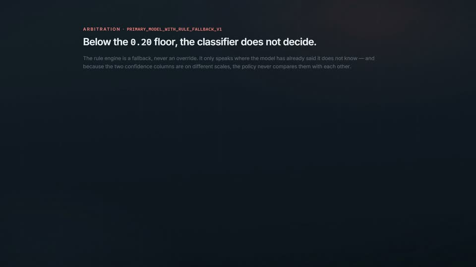
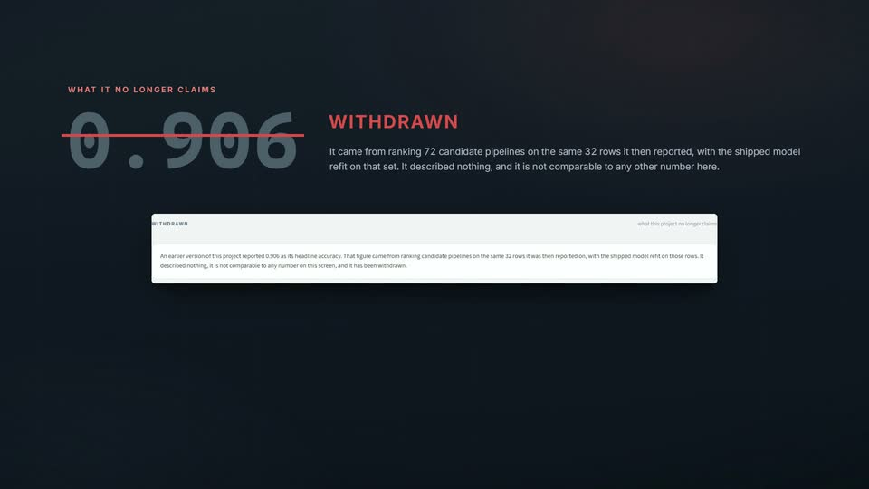
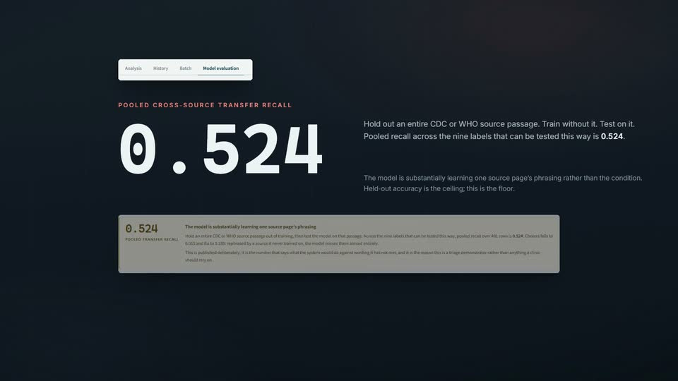

Symptom Triage Console
Symptom notes in, a triage suggestion out — with a published measure of where the classifier fails, shown beside its accuracy.
Overview
Free-text symptom notes in; a triage suggestion for one of 14 conditions out, with medication reference and warnings. Held-out accuracy is 0.894 — and the interface publishes 0.524 cross-source transfer recall beside it, in four places, because holding out an entire CDC/WHO source passage shows the classifier is largely learning one page's phrasing. Cholera drops to 0.015. Every answer also names the engine that decided and reports that engine's own accuracy, not the best one's. Building the measure that exposed all this was the hard part.
Problem and objectives
A held-out accuracy of 0.894 looks finished. Holding out an entire CDC or WHO source passage showed the classifier was largely learning one page's phrasing.
- Suggest one of 14 conditions from free text, with medication reference and warnings
- Say which engine decided, and how accurate that engine is
- Publish the measure that makes the numbers look worse
Architecture
Console
Streamlit
Notes in; suggestion, engine and its accuracy out.
- Console Streamlit — Notes in; suggestion, engine and its accuracy out.
- API FastAPI · 11 endpoints — Batch mode, CSV export, Markdown reports.
- Engines scikit-learn — Every answer names the engine that decided.
- Evaluation held-out and cross-source — 0.894 held-out, 0.524 transfer recall, per label down to 0.015.
- SQLite SQLAlchemy — Consultations with an audit trail and filterable history.
- Dataset 616 sourced rows — Each quotes a CDC or WHO passage, verified verbatim.
Engineering challenges and decisions
- Cross-source transfer recall 0.524 shown in four UI places, per-label down to 0.015
- Every response names the deciding engine and carries that engine's own measured accuracy
- 616 rows, each traced to a quoted CDC/WHO passage verified verbatim by the builder
- SQLite consultations with audit trail, filterable history, CSV export, Markdown reports, batch mode
Publishing 0.524
- The constraint
- The triage classifier's held-out accuracy is 0.894.
- What I rejected
- Shipping 0.894 alone.
- What I did
- Published 0.524 cross-source transfer recall beside it, in four places, because holding out an entire CDC/WHO source passage shows the classifier is largely learning one page's phrasing.
- What it cost
- Cholera reads 0.015, in public.
Technologies
My contribution
Solo developer — dataset, evaluation, FastAPI backend, Streamlit console, test suite.
Screens
Stills from the demo film.



Results
- 0.894
- held-out accuracy
- 0.524
- cross-source transfer recall, shown in four places
- 616
- rows, each traced to a quoted CDC or WHO passage
- 117
- tests across 11 documented endpoints